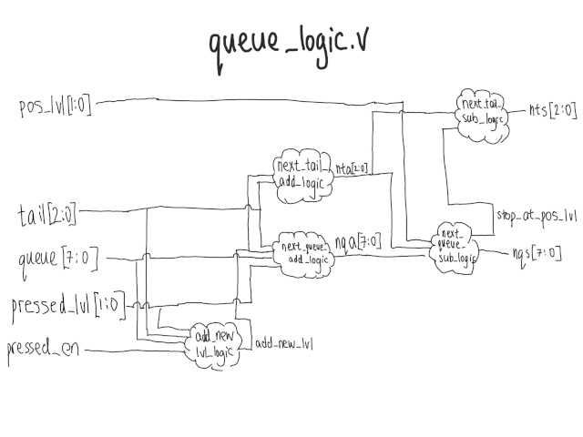
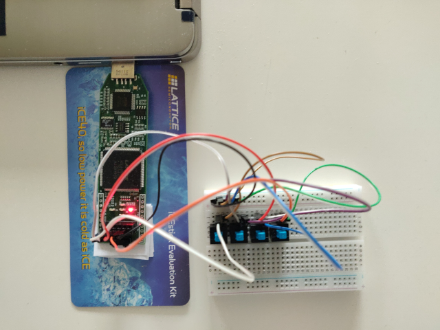
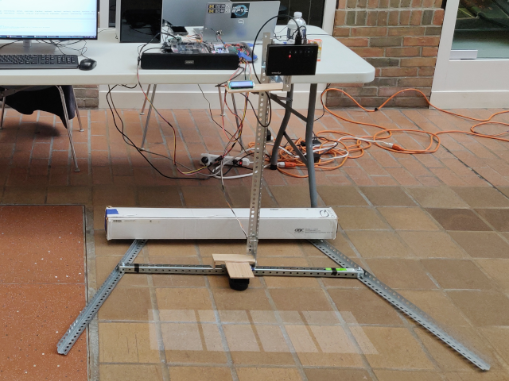
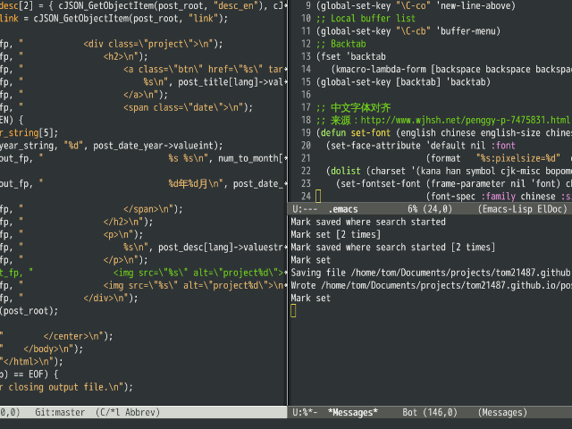
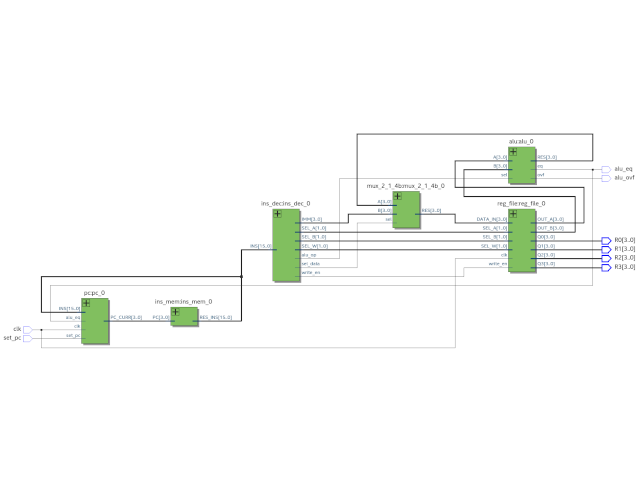
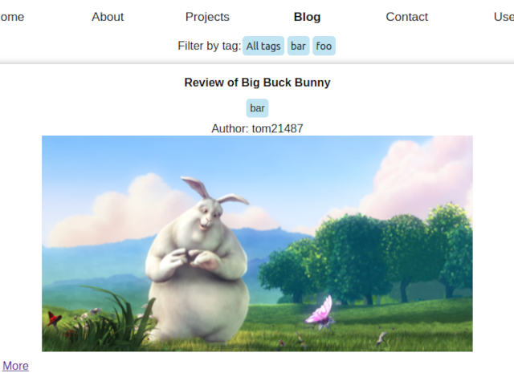

Tom Jiao - tom21487.github.io
En | ä¸
Welcome to my personal website. I am an undergraduate student at the University of Michigan College of Engineering. I am majoring in computer science and minoring in electrical engineering.
Interests: Computer Architecture, Digital Verification, Embedded Systems, Linux, Text Editors
Email: tomjiao@umich.edu
Below is a list of some of my personal projects. I hope to post more.
Verilog Elevator Queue October 2023
Elevator-inspired queue-like data structure implemented in Verilog.
RISC-V CPU on FPGA December 2022
I have completed DigiKey's Introduction to FPGA course, which culminated in running the FemtoRV RISC-V CPU on my Lattice IceStick FPGA.
Projector piano December 2022
This is my team's final project for UMich EECS373. It is a digital instrument that consists of a projector. The device can project piano keys onto any surface. When a key is pressed, a sound is played. The two largest modules in this project were the LIDAR scanner and the VGA controller. Technologies we used included: serial communication (UART, I2C), C programming, FPGA digital circuit design (Verilog) and soldering etc.
Emacs configuration file November 2022
It is time I share my config. Reasons I like emacs: 1) customizable, 2) self-documenting.
Gate-level CPU Core September 2022
4-bit CPU core using only wires and logic gates.
Blog creator August 2022
A platform for creating online blogs.
Youdao smart lamp July 2021
When I interned at Netease Youdao, I wrote gesture recognition algorithms for the smart lamp. I believe in improving education through technology.